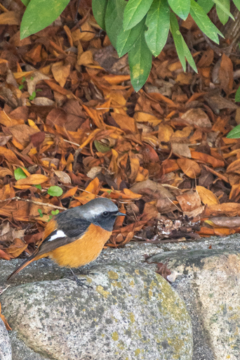
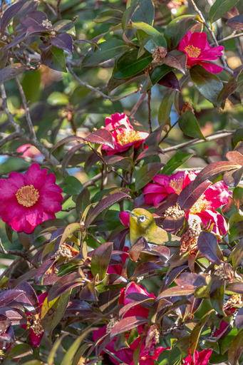
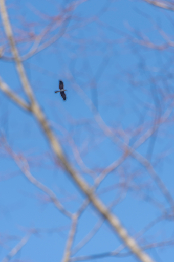
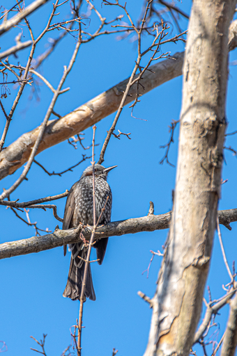

先日コゲラを最寄りの公園で見たことを書きましたが、その時は写真に収めることはできませんでした。なので人があまりいないと期待できる今日の午前中に同じ公園を訪れてみることにしました。
家を出てすぐのところにあるソメイヨシノの枝を見てみると、なんだか小さな小鳥が枝の間を飛び回っています。スズメかな？と思ったのですが、よく見ると下から見上げたときの体の色がオレンジ色です。
まさかジョビ夫やん！！

コゲラには逢うことができませんでしたが、朝一番にいきなりジョウビタキの雄と遭遇しました。生ジョビ夫は初です。
枝に留まっている姿は写せませんでしたが、ソメイヨシノのすぐそばの石垣の上に降りてきたので 1 枚だけなんとかシャッターを押しました。するとシャッターの音に驚いたのかジョビ夫はあっという間に飛んでいってしまいました。
人前で平気でくつろぐと言っていたのは誰だ！？
前述の通りコゲラには逢えませんでしたが次の野鳥に逢うことができました。
以下写真。


